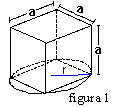
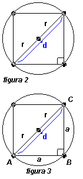
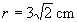
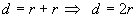
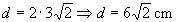
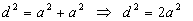
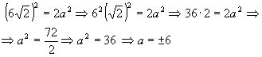
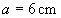
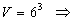
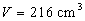

A figura 1 representa a situação exposta pela questão.O Volume de um cubo é dado por:
| V = a3 | I |

A figura 2 representa a face do cubo que está circunscrita à circunferência de raio

, observe que uma diagonal desta face é um diâmetro desta circunferência, ou seja,
, mas .Portanto:

IIO triângulo ABC (figura 3), é retângulo, então podemos aplicar o Teorema de Pitágoras para encontrar o valor de a:

Substituindo o valor de II na igualdade acima:

Como a é a medida de uma aresta do cubo, consideramos apenas o valor positivo para a:

Substituindo o valor de a na expressão I:


Conclusão: O item 01 é verdadeiro.